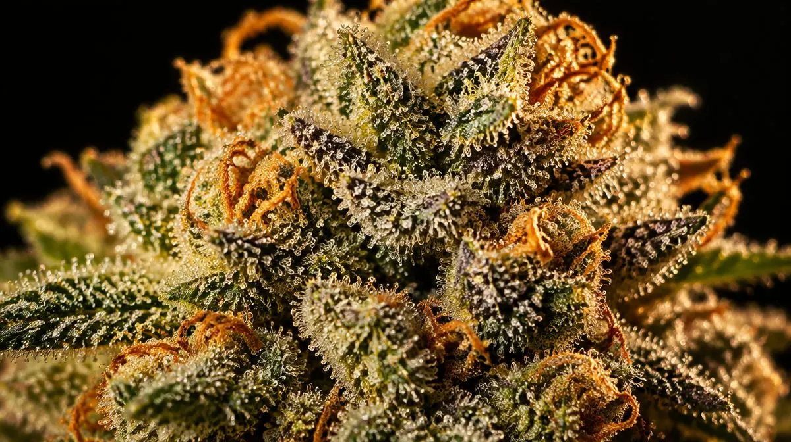

Local guides · 7 min read
Strongest Weed in Westchester: High THC Flower Guide
The strongest weed in Westchester is whichever lot tested highest the week you walked in, and that changes constantly. The flower that actually hits hardest has high total cannabinoids, a fat terpene number, and a slow dry behind it. A properly cured jar will flatten you harder than a rushed one with a bigger number on the front.
We stock the high testers at both stores and people ask for them by name, so this is not us talking you out of potency. There is a real difference between a mild jar and a strong one. It just is not the two digits on the label.
What to know up front

- New York does not cap flower potency. The state caps how much you can buy, at 3 ounces of flower or 24 grams of concentrate per day for adult use.
- Every legal jar in New York comes with a certificate of analysis (COA), the lab document listing cannabinoids, terpenes, and contaminant testing. Ask to see it.
- Flower labels show THCA, the acid form that converts to THC when you apply heat. Total THC is calculated from it, so the two numbers on a label are not measuring the same thing.
- Total terpene content separates strong-feeling flower from flat flower at the same THC reading, and most shoppers never look at it.
- Toke carries high potency flower at 471 McLean Ave in Yonkers and 2 S Central Ave in Spring Valley, and the strongest jar in the case is often not the most expensive one.
What counts as the strongest weed on a Westchester menu?

By the label, the top of the New York flower market clusters in the high twenties by percentage. Anything advertised far past that range is worth a skeptical look at the lab that ran it, because testing variance between labs is real.
By feel, the strongest flower we sell has the highest combination of total cannabinoids and total terpenes, grown by people who took the extra week. Two jars with nearly identical THC readings can produce completely different evenings, since your tolerance, whether you ate, and how much you inhale move the outcome more than a percentage point does.
Why is the THC percentage on the jar a bad shopping tool?

Because it measures quantity, not experience. The number tells you how much THC is present by weight, and nothing about how the flower burns or how it feels forty minutes in.
There is an incentive problem too. Percentage drives price on most menus, so everyone in the supply chain wants a high number, and the sample sent to the lab is not always representative of the batch.
Our post on what a THC percentage actually means is the most useful thing to read before you spend money on a high tester.
What actually makes flower hit harder?

Harvest timing. Trichomes (the resin glands where the cannabinoids and terpenes live) mature over a window of days, and a grower who chops on schedule instead of on maturity leaves potency behind. Handling costs potency too, since trichomes break off every time flower gets moved or over-trimmed.
The dry and the cure. Flower dried slowly over ten to fourteen days, then cured in sealed containers, keeps its aromatics. Flower blasted dry in three days to free up space smokes harsh and tastes like nothing. This stage separates the good New York growers from the rest, and we walk the chain in our post on how legal cannabis gets from seed to shelf.
Terpene load. Caryophyllene (black pepper), myrcene (earthy, mango-like), and humulene (hops) show up in the jars people call heavy. Limonene forward jars at the same THC number feel brighter. Leafly’s terpene primer covers what each one smells like.
How do you read a COA in thirty seconds?

Find total THC, then immediately find total terpenes. If the terpene number looks thin, put the jar down no matter what the THC line says.
Check the test date and batch number against the jar, because a COA from a different batch is not a COA for what you are holding. Then look at the contaminant panel. New York requires testing for pesticides, heavy metals, residual solvents, and microbials, which is the real difference between a licensed shop and a gray-market storefront. Our post on what lab tested cannabis actually means goes through it.
If a budtender cannot produce the COA, that is information about the shop. Ours will pull it up at the counter while you wait.
Which brands bring genuinely strong flower to Yonkers and Spring Valley?

Connected x Alien Labs is the one our team gets excited about. Few New York dispensaries carry it, the cure is consistent, and the jars come in loud enough that the potency question answers itself.
Wizard Trees, Runtz, JetPacks, and Boutiq come up regularly in the high tester conversation on our shelves. So Dope is another brand our team reaches for, New York grown and lab tested, and it moves fast at both stores. MFNY and Back Home Cannabis are worth asking about for New York grown flower with real weight behind it.
Which of these has a high testing batch on a given day is a question for a budtender, not an article, and the Yonkers case and the Spring Valley case rarely match. Our breakdown of the flower brands we stock in Westchester covers what each one does well.
Does high THC flower give you a better high?

Up to a point, and then it stops mattering. Past a certain dose, more THC extends the duration and the grogginess afterward rather than the intensity.
People with real tolerance do need more, so this is not a lecture about buying the mild stuff. If you smoke every day, a high tester is a reasonable purchase. If you smoke twice a month, it is a waste of money and an uncomfortable two hours.
Is the strongest flower worth the price?

Sometimes. Part of the premium is genuine, because a grower who cures properly and hand trims has higher costs. The rest is paying for the number itself, which carries a markup out of proportion to the experience. Plenty of mid-priced New York flower with strong terpene content outperforms the expensive jar next to it, which is the case we make in our guide to value flower in Westchester.
If you want the strongest effect per dollar, infused pre-rolls win outright, since hash or live resin in the cone pushes the dose past what flower reaches. We cover the good ones in our guide to infused pre rolls.
Who should not buy the strongest thing on the shelf?

Anyone new to cannabis. A high tester as a first purchase is the fastest way to have a bad time and write off the category.
Anyone coming back after a long break, since tolerance drops faster than people expect and the jar you used to finish in a week will feel like a different plant.
Anyone who needs to stay functional. If the plan is to smoke and then drive to New Rochelle for dinner, potency works against you, and driving impaired is illegal no matter what you consumed. Our post on New York cannabis laws covers the current rules.
Frequently asked questions
What is the strongest weed you can buy in Westchester? Whatever tests highest on the shelf that week, which is why we do not publish strain names or percentages here. There is no legal potency cap on flower in New York. The practical ceiling on most menus sits in the high twenties by percentage, and the strongest-feeling jars pair that with a high terpene number.
Does THCA mean the same thing as THC on a label? No. THCA is the acid form present in raw flower, and it converts to THC when you apply heat. Labels show both the THCA reading and a calculated total THC figure, which is why the two numbers on the same jar look different.
Will higher THC flower always give me a stronger high? No. Above a certain dose most people hit diminishing returns, and terpene content, cure quality, and your own tolerance shift the outcome more than a few percentage points do. A well grown moderate jar frequently beats a poorly cured high tester.
How much high THC flower can I buy at once in New York? Three ounces of flower per day for adult use, with the full rules published by the Office of Cannabis Management. You have to be 21 with a valid government photo ID, and the limit applies per person per day, not per transaction.
Can I get high THC flower delivered in Westchester or Rockland? Yes. Delivery runs across Westchester out of the Yonkers store, covering Mount Vernon, Bronxville, Scarsdale, and New Rochelle, and across Rockland out of Spring Valley for Monsey, Nanuet, and Nyack. You have to be 21, present at the door, with a valid government photo ID.
Where to buy strong flower in Yonkers and Spring Valley
Ask a budtender for the jar with the highest terpene number, then ask what it tested at. Doing it in that order is the whole trick and it takes a minute.
Toke Yonkers is at 471 McLean Ave, on the stretch that runs along the city line, a straight shot down Central Park Avenue from Scarsdale, Bronxville, and Tuckahoe. Open 10:00 AM to 10:30 PM Sunday through Thursday and 10:00 AM to 11:00 PM Friday and Saturday, 914-207-1545. Toke Spring Valley is at 2 S Central Ave, just off Route 59 and a short drive from Monsey, Nanuet, and New City. Open daily 10:00 AM to 11:00 PM, 845-406-3004. Current stock is on the Yonkers menu and the Spring Valley menu.
Delivery runs Westchester out of Yonkers and Rockland out of Spring Valley, with a $75 minimum. Delivery is free on orders of $75 or more. Cash or debit at the door, since no New York dispensary can take credit cards under federal banking rules. Veterans get 15 percent off with one-time proof, NYS medical cardholders get 10 percent, and first orders get a welcome discount. Both licenses are in the state’s dispensary verification tool.
Keep reading
More from the blog

Why Shopping Local Matters in New York’s Cannabis Industry
If you’ve ever been standing in line at Toke Cannabis in Yonkers or Spring Valley, New York and asked:

Dispensary Guide for Rockland County
Rockland County has far fewer licensed dispensaries than its population would suggest, and the reason is that New York let every city, town, and…

Best Infused Pre Rolls in Westchester
An infused pre roll is flower rolled in a cone with cannabis concentrate added, mixed through the grind, coated on the outside, or run down the…
Two stores · open 7 days
Order tonight, pick it up in minutes
Order online for in-store pickup, curbside pickup, or delivery across Westchester and Rockland. Free delivery on orders of $75 or more.